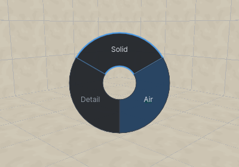
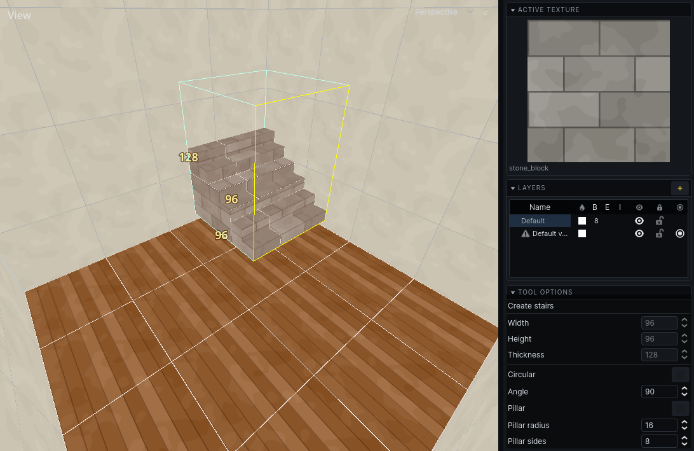
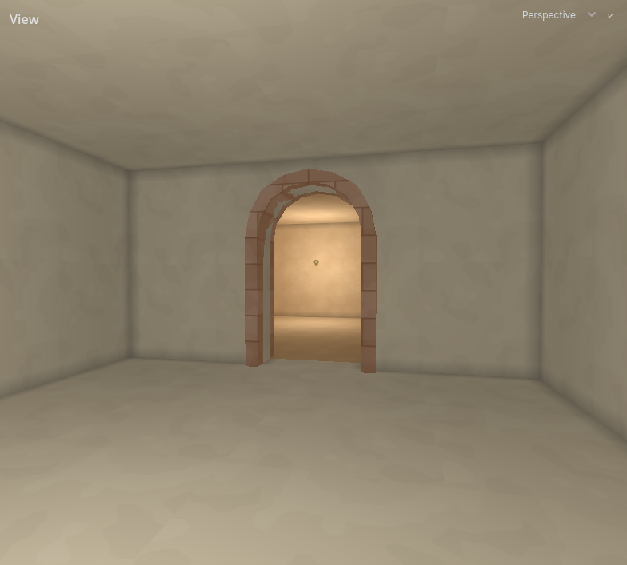

Building
Every brush tool draws a box first and fills it with a shape. What the brush does to the world depends on its tier. What the tiers mean is in The carved world.
Choose the tier
Volume on the toolbar sets the tier of new brushes: Solid, Air or Detail. It starts on Air, since the first thing you draw in solid rock is a room.
- Tap
Tabto cycle Solid → Air → Detail. - Hold
Taband a wheel of the three opens at the cursor. Move towards one and let go. Let go without moving to keep the current one;Esccancels. - Select brushes and press
Uto give them the current tier.
Tab works inside the brush tools, so you can switch between drawing a room and the wall inside it without leaving the tool.

Draw a brush
All brush tools draw the same way. The foot of the left panel says which step you are on.
- Choose the tool: Cube
B, CylinderC, ConeShiftC, RampShiftR, Stair (Tools menu), ArchA. - Click the first corner. In the 3D view, the brush starts on the surface under the cursor; in a 2D view, on that view's working plane.
- Move the mouse and click to set the base.
- Move the mouse to give it depth, and click. The depth follows the mouse in whichever view it is in, so you can draw the base in the top view and set the height in a side view, where the top of the box goes to the cursor.
- Adjust: drag any face of the box to resize it, or type a size into the tool's panel. In a 2D view, drag inside the box to move it.
- Press
Enterto keep it.
Esc takes back the last click: while adjusting, it goes back to giving depth; while giving depth, back to drawing the base; while drawing the base, back to the first corner. Before the first click it leaves the tool.
From the first click until you keep or throw away the brush, Cmd Z and Cmd Shift Z undo and redo changes to the box and its settings, never an edit to the map.
Each tool keeps its settings - a cylinder's sides, a stair's steps, an arch's curve - from one use to the next, and from one session to the next.
A box given no depth gets 32 units. In Air, a brush begun on a surface in the 3D view goes into the surface, the way a doorway or an alcove does; drag towards you to build it out of the surface instead.
Cut one piece of dressing out of another
In Detail, giving the box depth downwards into brushes you have selected cuts it out of them instead of leaving the two to overlap: a notch in a moulding, a slot in a beam. Select the brushes to cut first, then draw. Nothing is cut in Solid or Air — there, a brush is kept as drawn and what it does to the world is the tier's business, so cutting a hole through the level is what an air brush is for.
New brushes take the active texture. Sizes snap to the grid; see Editing.

WYSIWYG previews
With WYSIWYG Tool Previews on (W, or the 3D view's View dropdown), the brush being drawn takes part in the world: an air brush carves as you drag it. On a large map this is slow. Turn it off and brushes preview as wireframes.
Cube
A box. Its panel shows width, height and thickness.
Cylinder
A cylinder filling the box. Left / Right give it fewer or more sides. For a round hole, draw the cylinder in Air. Its sides are smooth, lit as one round surface; untick Smooth in the panel for a faceted column.
Cone
A cylinder without a top: its sides meet at a point over the middle of the base. The base is what you draw, and the point is at the far end of the box, so giving it depth downwards hangs the cone from its base. Left / Right give it fewer or more sides. Its sides are smooth unless Smooth is unticked, as a cylinder's are.
Ramp
A box with one top edge gone: its top slopes from the far side down to one edge of the base, which the tool marks. Space turns the slope a quarter, to the next edge of the base. I toggles Inverse, the rest of the box: flat on top with the slope underneath, as a sloping ceiling is. Giving it depth downwards hangs the ramp from its base with the slope underneath.
Stair
Steps inside the box. Space turns the stairs a quarter while adjusting.
What the stair builds depends on the tier.
- Solid or Detail: the steps, standing on the bottom of the box. Solid steps are part of the level's shape; Detail steps are furniture inside a room.
- Air: the stairwell. It carves the space above each step, up to the top of the box, so a stair drawn through the rock between two floors is a passage you can walk up. Draw the box as high as the stairwell's ceiling. A spiral's centre is left as rock, and Floored and Step thickness do not apply.
| Setting | Does |
|---|---|
| Step height, Step depth | size of each step |
| Step thickness | how deep each step is, when not Floored |
| Floored | steps go all the way down to the bottom of the box |
| Circular, Angle | a spiral stair turning through that many degrees |
| Pillar, Pillar radius, Pillar sides | a central post for a spiral stair |
| Outer sides | how round the spiral's outer edge is |
| Winder | spiral steps stretched to fill the box |
Arch
What the arch builds depends on the tier.
- Solid or Air: one brush filling the arch's opening. Use Air to carve an arched doorway or hall.
- Detail: the arch itself, as a ring of brushes with a leg down each side. Thickness sets how thick the ring is.
| Key or setting | Does |
|---|---|
Left / Right, Sides |
fewer / more facets in the curve |
Space, Rotate 90° |
span the other horizontal axis |
| Arc angle | how much of a circle the curve is |
| Spring height | height of the straight legs; the curve takes the rest |
| Outward | build the ring outside the box instead of inside it |
| Smooth | light the curve as one surface; untick for a faceted arch |
The arch always stands upright, whichever view you draw it in.

Polygon
Any outline, then depth. Cmd P. A concave outline becomes several convex brushes.
- Click to add points.
- Click the first point again to close the outline.
Backspaceor right-click takes the last point back. - Move the mouse to give it depth, click, then
Enter.
Thickness in the panel sets the depth by number. Tick Smooth to make the sides smooth, for an outline drawn round.
Building rooms
- Draw rooms in Air. Overlap two rooms to make one space; abut them on a shared wall to make two rooms with an opening. See Rooms and portals.
- Draw walls, pillars and furniture inside rooms in Detail.
- Solid puts rock back. Where solid and air overlap, the order they were drawn in decides; see The carved world.